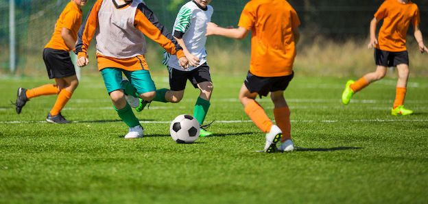

About pentvars SRC Sports Academy
Empowering athletes, building community
Our History
The Student Representative Council (SRC) of Pentecost University launched the SRC Sports Academy to enhance the university's reputation while promoting sports development within the university and the surrounding community.
What started as a small initiative has grown into a comprehensive sports institution serving hundreds of athletes, students, and community members.

Our Mission
To provide accessible, high-quality sports training and development programs that nurture talent, promote physical wellness, and build character in our students and community members.
Our Vision
To become a leading regional sports institution recognized for excellence in athletic development, community engagement, and fostering future champions.
Our Core Values
Excellence
Striving for the highest standards in everything we do
Community
Building strong, inclusive sporting communities
Integrity
Upholding fairness and ethical practices
Growth
Continuous improvement and development
Funding Sources
SRC Sports Academy is proudly supported by:
- Pentecost University SRC Allocation
- Community Sports Development Grants
- Corporate Sponsorships
- National Sports Authority Partnerships